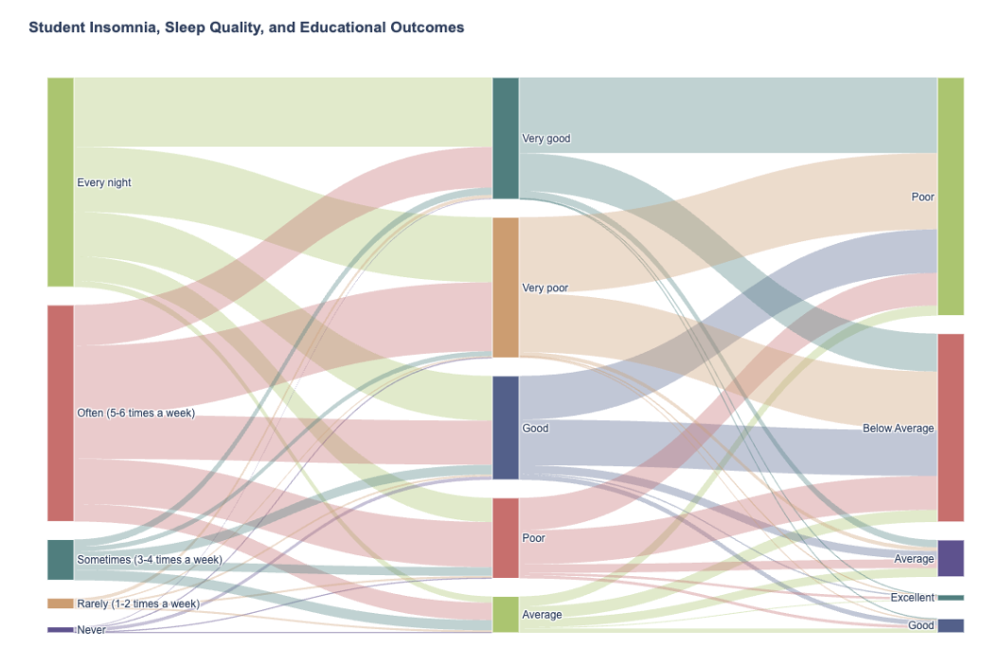

Everyone knows that sleep is essential, but how much sleep do college students really get? College students have to juggle class, projects, internships, part-time jobs, take care of themselves, and try to have a social life. Unfortunately, college students have to make sacrifices to keep up with their busy lives, and that often means cutting out a good night's sleep. This project uses a dataset of 500 college students to explore what student sleep habits are, what parts of student life impact sleep, and what the potential consequences of the college students' sleepless nights?
From the dataset, we will explore what are the habits of students who tend to sleep late and, despite knowing the negative consequences of sleep deprivation to their health and academic outcomes, still maintain their bad habits.
We aim to tell the story of university students, and how the demanding life of being a student negatively impacts sleep, and how that lack of sleep in turn takes a toll on students' academic outcomes and negative impacts on their health.
“The Student Sleep Patterns" dataset from Kaggle outlines university students by age, gender, university year, sleep duration, study hours, screen time, caffeine intake, physical activity, and sleep quality. We see from the raw data that students range from ages 18 to 25, where 37% are male, 33% female, and 30% other. In total, there are 26% of students who are 3rd years, 26% 2nd years, and 47% other.
“Social Media Mental Health Indicators Dataset” is a dataset from Kaggle that explores how screen time directly impacts the number of sleep hours students get by age and gender. Information on what Platform students use, along with the date, or if it was a positive or negative interaction online, is also recorded.
“Sleep Habits” is a dataset from Kaggle that breaks down by age, gender, location, quality of sleep, naps, bedtime hours, medical conditions, difficulty sleeping, and activities before bed. It visualizes what sleep habits students have that can influence their amount of sleep and understand their -routine across different locations. The highest medical conditions that are listed are insomnia for 28% and restless leg syndrome for 23%.
“Student Insomnia and Educational Outcomes Dataset”: This dataset quantifies the relationship between student sleep health and academic outcomes, demonstrating how factors like pre-sleep electronic use, caffeine intake, and insomnia correlate with daytime fatigue, heightened academic stress, and declining GPA.
The user experience begins with a scroll-driven interface, initially contrasting the percentage of well-rested students against those in a sleep deficit. Following this, the Radial Bar Chart emerges; as viewers descend the page, the interactive clock face illustrates the rhythmic "shape" of the university night, converting abstract timestamps into a tangible "late-night energy" that reveals actual resting patterns.
The Sankey Diagram> then takes center stage as the "main character," inviting the audience to manually calibrate their own habits, such as daily sleep averages and caffeine consumption. This sequential, scroll-based format ensures participants first grasp the magnitude of the sleep crisis before navigating the intricate consequences, specifically the "pathway to failure" that links inadequate rest to intensified stress and deteriorating academic performance. The audience can literally see the "Excellent Sleep" group flowing mostly toward "Excellent GPA," while the "Poor Sleep" group branches off into "High Stress" and "Average/Below Average Performance."
We choose to present our story as a Martini Glass structure because it initiates with a focused, guided narrative that directs the viewer through precise data points regarding student sleep cycles and disruptors like excessive screen time. This framework eventually expands, granting the audience autonomy to engage with the interactive Sankey Diagram to discover their unique trajectory toward success or failure. It strikes an effective balance between a structured educational account of sleep deprivation's fallout, including academic strain and biological repercussions, and the flexibility for users to analyze the data independently.
First, we explain the factors that affect the sleep behaviors: study schedule, work schedule, extra curricular activities by using the Radial Bar Chart. We use this to visualize the context of how current students are sleeping to better understand what students are engaged with on a daily basis.
Second, we use the Bar Chart to show the overall sleep trends of students: their average sleep hours, and sleep quality for different years (freshman, sophomore, junior and senior). This is a good transition from the previous visualization as it provides more specific data of college students by grade level and can provide insights on sleep patterns as a whole.
Then we choose the Heatmap to highlight how different factors across all categories in our datasets such as stress levels, caffeine intake, screen time, sleeping disorders, etc., affect the sleep hours. Through this, we can show why a subset of the attributes mentioned above is selected for our next visualization.
Finally, we choose the Sankey Diagram as we mentioned in part D.
